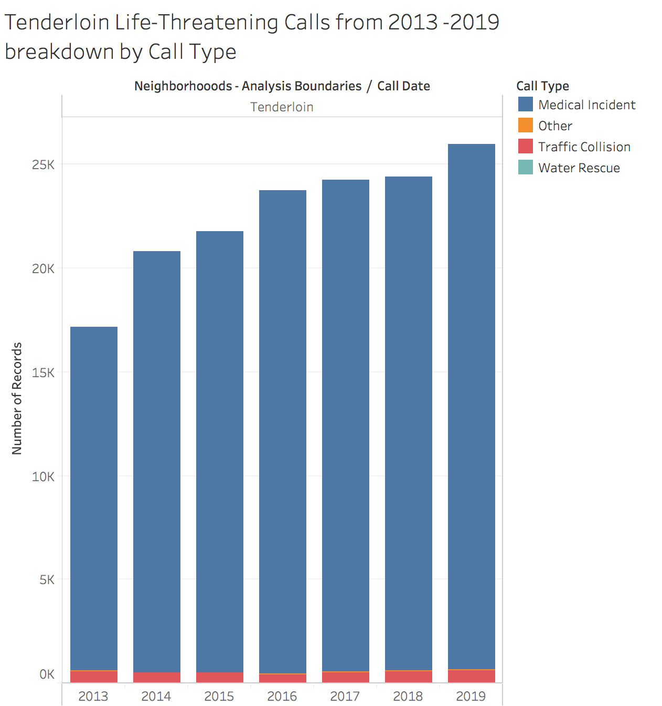
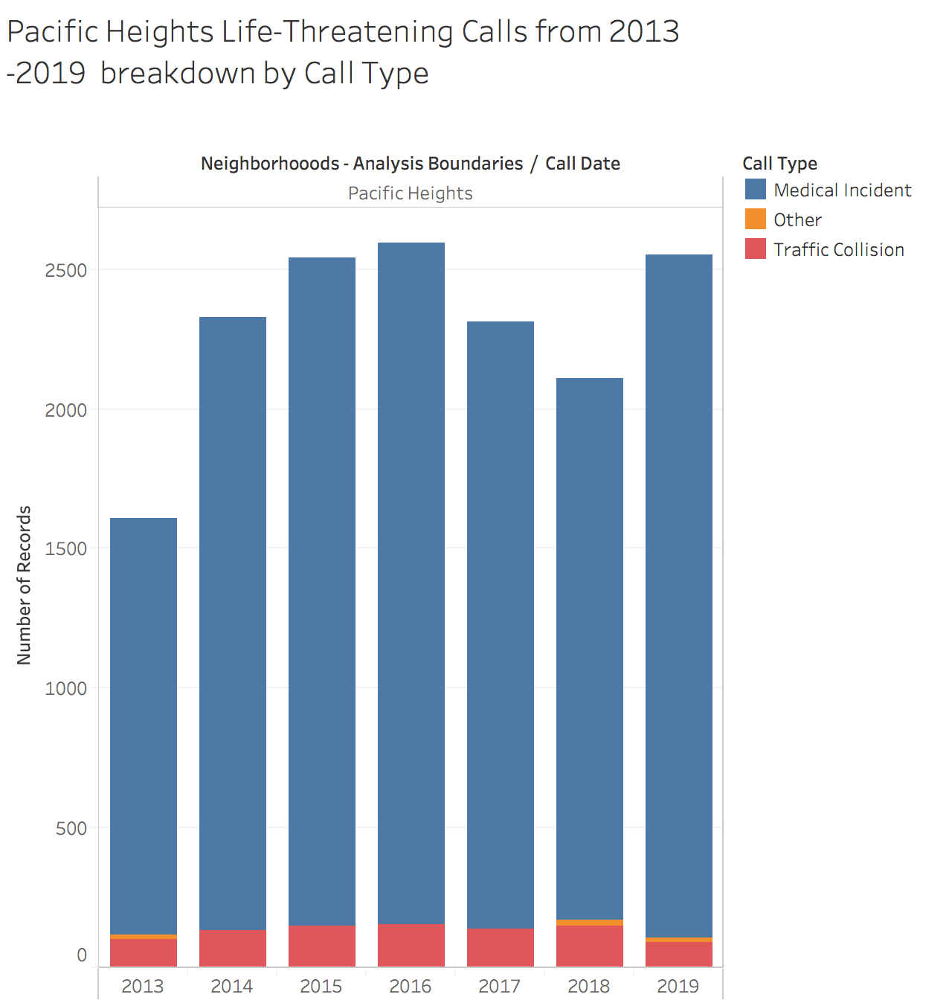
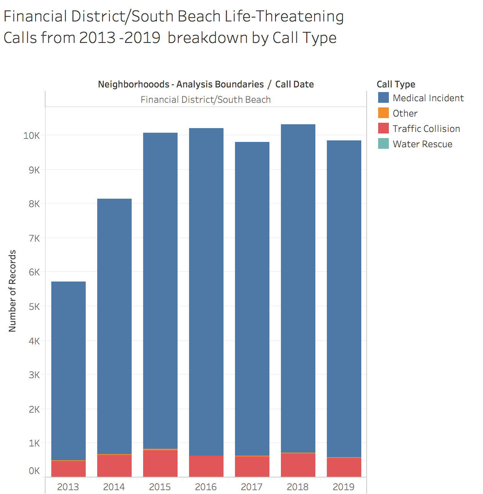

Trends of Number of Called Deemed "Life Threatening"
Data Wrangling
Data was wrangled first prior to download, through the editor provided on the data provider's website. There, we were able to filter to download only the calls that were part of the call group "Life-Threatening", and only download data between the years of 2013 and 2019. That data was then wrangled in Excel, where we removed unecessary columns. Finally, additional filtering, namely excluding all but the top 15 neighborhoods in terms of number of life-threatening calls, was done in Tableau.Visualizations
This visualization shows the number of calls deemed life-threatening from 2013 to 2019, per neighborhood, for the 15 neighborhoods with the most number of such calls. The x-axis indicates the time period by year, while the y-axis indicates the number of calls for each year. Since this is broken down by neighborhood, each neighborhood is colored, and the color is indicated in the legend that accompanies the chart. There is clearly an upward trend in terms of calles deemed life-threatening in most of the neighborhoods indicated in the chart. This may in part be because of an increase in population year over year, so we can not necessarily conclude that there's an increase in calls per person. However, considering some of the neighborhoods included in this visualization have increases of 50% (Tenderloin, Bayview/Hunter's Point) to 75% (South of Market), it's likely these increases in life-threatening calls are not only because of an increase in population.

To provide further clarity, we've included three visualizations that break down the call type of the life-threatening calls in select neighborhoods (Tenderloin, Pacific Heights, and Financial District/South Beach respectively). It's evident that in the tenderloin, there is a lower percentage of traffic related accidents that contribute to the total number of life-threatening calls compared to Pacific Heights and the Financial District/South Beach neighborhoods. Further, traffic collisions remained more or less stable over the period we're examining, while call types related to other medical incidents increased significantly. If the increase in life-threatening call types was solely because of an increase in population, we would also expect the number of calls relating to traffic collisions to increase consistently.
  